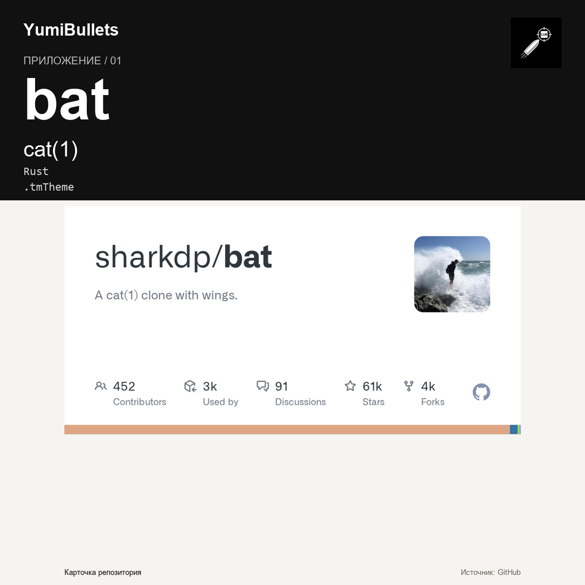

bat вместо cat: подсветка в терминале и предсказуемые пайпы
Читать код, конфиги и логи в терминале хочется с подсветкой, но менять поведение отлаженных скриптов — нет. bat в описании репозитория значится как «A cat(1) clone with wings»:…